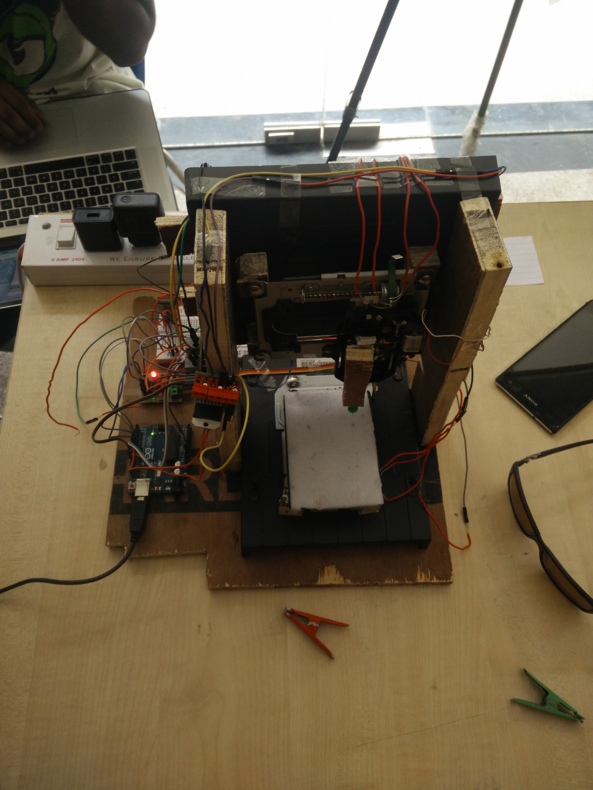

Braille Printer
In my first year of my undergraduate studies, we built a prototype for a braille printer. A user could type in a message on his/her phone and the printer would print that message on a sheet in braille.
We built a 3axis cnc using Servo motors from old CD/DVD drives. The chasis was built using old wooden peices from disposed furniture. The casing of the CD drivers was used to build the base and the back support. We used a bluetooth module for communication. We plugged all the motors through motor drivers and used an Arduino for processing everything. The whole system cost about $5 (we borrowed the arduino).
We won the best project award and were selected for showcase at the Delhi Mini Maker Fair in front of an audiance of about five hundred people.